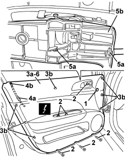

7005E10 FRONT SIDE DOOR INTERIOR PANEL - R.R.
- Path
- Procedures > 70 FITTINGS > 7005 PASSENGER COMPARTMENT FRONT SIDE DOORS > 7005E FRONT DOOR TRIM > 7005E10 FRONT SIDE DOOR INTERIOR PANEL - R.R.
- Kind
- repair procedure (removal / refitting; the operation number is the code)
- Applies to
- all engines; all production periods
- Interactive page
- https://sloeber94.github.io/elrnDB/alfa/159/en/#/939011136
Applies to: all engines; all production periods
 Removing
Removing
 Refitting
RefittingOp. 7005E12 CORNER COVER FOR ONE FRONT SIDE DOOR, LH OR RH - R.R.
Op. 7005E38 FRONT SIDE DOOR INTERIOR HANDLE- R.R.
Op. 7040E24 LOWER COURTESY LIGHT IN DOOR PANEL - R+R
1.Release the trim cover.
2. Undo the bolts.
3. Move the panel (3a) slightly releasing the inner retainers (3b) using the special tool.
Tool | Description | Function | Validity |
|---|---|---|---|
1823015000 | Knife | Retainer removal |
4. Disconnect the electrical connection (4a) for the anti-theft warning light (4b) (driver's door only).
Description | Component |
|---|---|
ALARM LED |
5. Releaase the retainers (5a) for the interior handle (5b).
6. Keep the inner panel.

Applies to: all engines; all production periods
Refitting
Removing- Check that the inner panel is not damaged.
- Attach the interior handle retainers.
- Connect the electrical connection for the anti-theft warning light.
- Place the panel in position and attach the inner retainers.
- Tighten the bolts.
- Fit the trim cover.
Op. 7040E24 LOWER COURTESY LIGHT IN DOOR PANEL - R+R
Op. 7005E38 FRONT SIDE DOOR INTERIOR HANDLE- R.R.
Op. 7005E12 CORNER COVER FOR ONE FRONT SIDE DOOR, LH OR RH - R.R.
- Check that the dismantled parts are working.
Topics linked from this page (4)
- 7005E12 CORNER COVER FOR ONE FRONT SIDE DOOR, LH OR RH - R.R.
- 7005E38 FRONT SIDE DOOR INTERIOR HANDLE- R.R.
- 7040E24 LOWER COURTESY LIGHT IN DOOR PANEL - R+R
- E040 ALARM LED
Topics that link to this page (20)
- S062 FRONT DOORS CREAKING
- 5505A42 CONTROL UNIT (DIGITAL NETWORK NODE) IN DRIVER'S DOOR - R.R.
- 5505B11 FRONT DOOR WIRING (ONE) LEFT OR RIGHT - R.R
- 5570T90 FRONT SPEAKER (ONE), LEFT OR RIGHT - R.R
- 5580E18 ANTI-THEFT DEVICE W/L - R+R FOLLOWING ELECTRICAL WIRING CHECK
- 7005A09 FRONT SIDE DOOR INTERIOR SUPPORT FRAME - R.R.
- 7005C11 FRONT SIDE DOOR EXTERIOR HANDLE - R.R
- 7005C41 FRONT SIDE DOOR EXTERIOR HANDLE LOCK CONNECTION LINK - R.R
- 7005C53 FRONT SIDE DOOR INTERIOR OPENING HANDLE (ONE), LEFT OR RIGHT - R.R.
- 7005D15 FRONT SIDE DOOR DESCENDING WINDOW GLASS (ONE) LEFT OR RIGHT - R.R
- 7005D25 FRONT DOOR WINDOW REAR GUIDE - R R
- 7005D26 FRONT SIDE DESCENDING WINDOW GLASS SCRAPER (OUTER) (ONE), LEFT OR RIGHT- R.R
- 7005D30 FRONT SIDE DESCENDING WINDOW GLASS SCRAPER (INNER) (ONE), LEFT OR RIGHT - R.R.
- 7005D33 CHANNEL FOR DOOR DESCENDING GLASS INNER GUIDE (ONE) LH OR RH ON FRONT SIDE DOOR - R.R.
- 7005E50 FRONT SIDE DOOR PILLAR TRIM (ONE) LH OR RH - R.R.
- 7005M26 ELECTRIC WINDOW MECHANISM FOR ONE FRONT DOOR LH OR RH - R.R
- 7005M29 FRONT SIDE DOOR ELECTRICALLY OPERATED WINDOW MOTOR, LEFT OR RIGHT - R.R
- 7005N21 FRONT SIDE DOOR LOCK MOTOR/LOCK ASSEMBLEY FOR ONE DOOR, LEFT OR RIGHT - R.R.
- 7005R30 ELECTRICALLY CONTROLLED DOOR MIRROR (ONE) - R+R
- 7205E36 STRIPPING FRONT SIDE DOOR